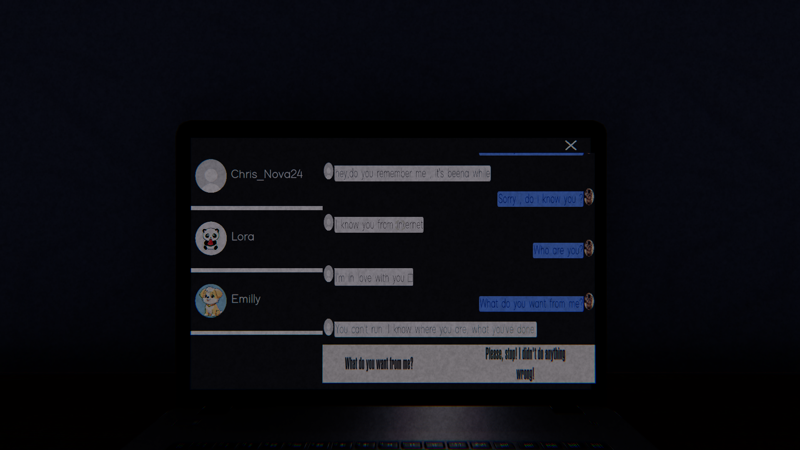
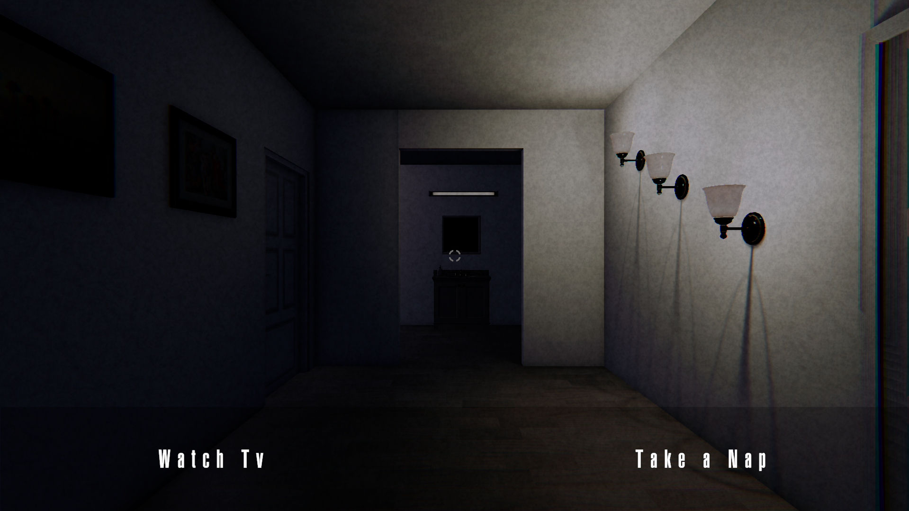

Behind the Screen: Parasocial
Développement d’un jeu narratif où les choix du joueur influencent le déroulement de
l’histoire (Épisode 1 : Parasocial).
Plus de 200 téléchargements en un mois.
Unity , Adobe Audition et Photoshop.



← Accueil